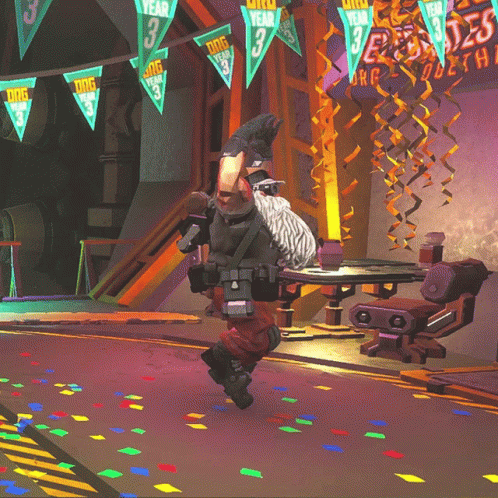

Deep Rock Galactic is waiting for you
Is your life getting a little boring? Lonely, even? Well, it's your lucky day!
What do you mean you have no interest in becoming a miner?
Of course you do. Just wait until you read the job description.
Missions
Your job as a miner is simple!
First, we get you in the Drop Pod and plunge you a few kilometers deep into the planet of Hoxxes IV.
Complete the mission objective while fighting horrible monsters beyond your comprehension.
And then the Drop Pod comes back for you! Please be advised: not making it to the Drop Pod in the given time window will result in abandonment, more importantly, the termination of your contract with DRG.
Bugs
Glyphid
Glyphids resemble arachnids. All possessing eight legs, exoskeletons, and bodies split into three main segments. All Glyphids are capable of climbing walls and ceilings.
Glyphid
Glyphids resemble arachnids. All possessing eight legs, exoskeletons, and bodies split into three main segments. All Glyphids are capable of climbing walls and ceilings.
Have a beer with Lloyd
Thought it was all work? Don't worry Deep Rock's got you covered!
After your hard missions everyone can have a beer at the Abyss Bar.
If you make it out, that is!
Disclaimer:
DRG is not responsible for any type of physical or psychological harm caused to workers during the expeditions.